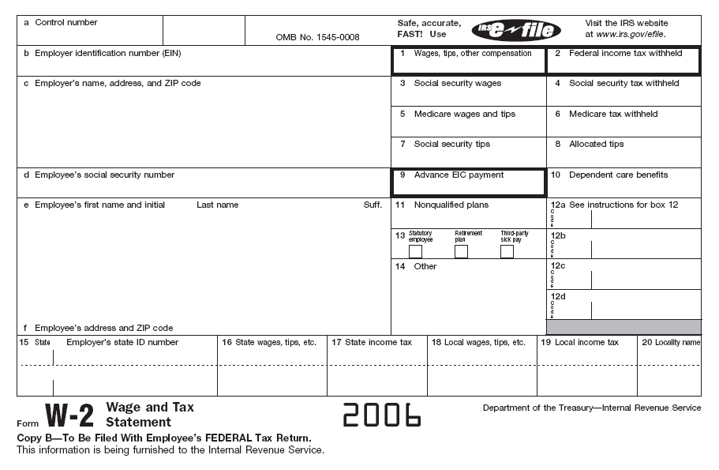

W-2 xodim va 1099 mustaqil pudratchi: AQShda ishchi maqomi farqi
AQShda ishlaganda siz yo "xodim" (W-2), yo "mustaqil pudratchi" (1099) hisoblanasiz — bu farq soliq, nafaqa va huquqiy himoyani tubdan o'zgartiradi. Ushbu ma'lumotnomada IRSning nazorat testi, W-2 va 1099-NEC shakllari, FICA va o'z-o'zini bandlik solig'i (15,3%), choraklik soliq, ishchi himoyalari hamda noto'g'ri tasniflash (misclassification) faqat rasmiy manbalar — IRS, SSA va Mehnat vazirligi (DOL) asosida tushuntiriladi. Bu — umumiy ma'lumot, soliq yoki yuridik maslahat emas.

AQShda ish haqi olib ishlaganda siz ikki maqomdan birida bo'lasiz: "xodim" (employee) — yil oxirida W-2 shaklini oladi; yoki "mustaqil pudratchi" (independent contractor), ya'ni o'zini-o'zi band qilgan shaxs — 600 dollar va undan ko'p to'lov uchun 1099-NEC shaklini oladi. Bu farq soliq, nafaqa va huquqiy himoyani tubdan o'zgartiradi. Ushbu ma'lumotnoma faqat rasmiy manbalar — AQSh Soliq xizmati (IRS), Ijtimoiy ta'minot boshqarmasi (SSA) va Mehnat vazirligi (DOL) asosida umumiy tartibni tushuntiradi. Bu soliq yoki yuridik maslahat emas; raqamlar va qoidalar o'zgarib turadi.
Asosiy farq: ishni kim nazorat qiladi
IRS ishchi maqomini "umumiy huquq" (common-law) nazorat testi orqali belgilaydi va uch toifani birga ko'rib chiqadi: xulq-atvor nazorati (biznes nima va qanday ishlanishini yo'naltirish huquqiga egami — ko'rsatmalar, o'qitish), moliyaviy nazorat (xarajatlar, ishchining o'z sarmoyasi, to'lov usuli, foyda yoki zarar ko'rish imkoni) va tomonlar munosabati (yozma shartnoma, nafaqa/ta'til kabi xodim imtiyozlari, munosabat doimiyligi, ish biznesning asosiy qismimi). Hech bir omil yakka o'zi hal qilmaydi — butun munosabat va nazorat darajasi baholanadi. Xodim W-2, haqiqiy mustaqil pudratchi esa 1099-NEC oladi.
W-2 va 1099-NEC shakllari
W-2 (Wage and Tax Statement) — ish beruvchi har bir xodimga beradigan shakl; u ish haqini va ushlab qolingan soliqlarni (jumladan, Ijtimoiy ta'minot va Medicare soliqlari) ko'rsatadi. 1099-NEC (Nonemployee Compensation) — biznes yil davomida xizmat uchun 600 dollar va undan ko'p to'lagan xodim bo'lmagan shaxsga beradigan shakl. 1099-NEC 2020 soliq yilidan boshlab eski 1099-MISC shaklining 7-katagini almashtirdi. Ikkala shaklning muddati bir xil: to'lovchi ularni IRSga topshirishi va qabul qiluvchiga berishi keyingi yilning 31-yanvarigacha amalga oshiriladi.
Soliqlar: FICA va o'z-o'zini bandlik solig'i
Xodimda ish beruvchi daromad solig'i va FICA ulushini ish haqidan ushlab qoladi. FICA = Ijtimoiy ta'minot 6,2% + Medicare 1,45% = xodimdan 7,65%, va ish beruvchi shuncha — yana 7,65% to'laydi, jami 15,3%. Mustaqil pudratchida esa ushlab qolish bo'lmaydi — u o'z-o'zini bandlik solig'ini (self-employment tax) to'liq, ya'ni 15,3% (12,4% Ijtimoiy ta'minot + 2,9% Medicare) o'zi to'laydi. Ijtimoiy ta'minot solig'i faqat yillik ish haqi "bazasigacha" (2026-yilda 184 500 dollar) qo'llanadi; Medicare solig'ida bunday yuqori chegara yo'q — barcha daromadga tatbiq etiladi.
Choraklik soliq va deklaratsiya
Xodimning solig'i ish haqidan avtomatik ushlanadi; mustaqil pudratchining solig'i esa ushlanmaydi. Shu sababli pudratchi, agar yil yakunida 1000 dollar va undan ortiq soliq qarzi kutilsa, odatda choraklik taxminiy soliq to'lovlarini (Form 1040-ES orqali) amalga oshirishi kerak. Pudratchi o'z daromadini va biznes xarajatlarini Schedule C (Form 1040) orqali bildiradi; o'z-o'zini bandlik solig'ining yarmi soliq solinadigan daromadni hisoblashda chegirib tashlanadi.
Nafaqa va huquqiy himoya
Himoya jihatidan farq katta. AQSh adolatli mehnat standartlari qonuni (FLSA) — minimal ish haqi va qo'shimcha ish vaqti (overtime) haqi kabi himoyalar — faqat mehnat munosabati bo'lganda qo'llanadi; mustaqil pudratchi o'zi uchun biznes yuritayotgan hisoblanib, FLSA himoyasiga kirmaydi. Xodimlar, odatda, ishsizlik sug'urtasi, ish o'rnidagi jarohat sug'urtasi (workers' comp) va ish beruvchi imtiyozlariga (tibbiy sug'urta, nafaqa jamg'armasi, haq to'lanadigan ta'til) ega bo'ladi; mustaqil pudratchilar odatda bularni olmaydi.
Noto'g'ri tasniflash (misclassification)
Aslida xodim bo'lgan shaxsni mustaqil pudratchi sifatida ko'rsatish — noto'g'ri tasniflash hisoblanadi va qonunga xilof. DOL ta'kidlaganidek, shunchaki 1099 shaklini berish yoki "mustaqil pudratchi shartnomasi"ga imzo qo'yish shaxsni avtomatik pudratchiga aylantirmaydi. Ishchi ham, biznes ham IRSdan maqomni rasmiy aniqlashni so'rab Form SS-8 topshirishi mumkin. Noto'g'ri tasniflangan ishchi o'zidan ushlanmagan Ijtimoiy ta'minot va Medicare soliqlarining faqat o'z ulushini Form 8919 orqali hisoblab, to'lashi mumkin; noto'g'ri tasniflagan biznes esa bandlik soliqlari bo'yicha javobgar bo'lishi mumkin.
Muhojirlar uchun eslatma
Ikkala maqomda ham qonuniy ishlash uchun amaldagi ishlash ruxsati talab qilinadi. Ishlash huquqiga ega shaxs Ijtimoiy ta'minot raqamidan (SSN) foydalanadi; ITIN esa SSN ololmaydigan, lekin soliq to'lashi lozim shaxslar uchun faqat soliq raqami bo'lib, o'zi ishlash huquqi yoki immigratsion maqom bermaydi. Eng muhimi: daromad W-2 yoki 1099 shakli berilgan-berilmaganidan qat'i nazar soliqqa tortiladi va bildirilishi shart — shakl kelmagani daromadni bildirish majburiyatini bekor qilmaydi.
Eslatma
Ushbu matn — umumiy ma'lumot bo'lib, soliq yoki yuridik maslahat o'rnini bosmaydi. Soliq stavkalari, chegaralari va qoidalari har yili o'zgaradi, har bir holat o'ziga xos. Aniq maslahat uchun litsenziyalangan soliq mutaxassisi (CPA, enrolled agent) yoki advokatga murojaat qilish tavsiya etiladi.
Manbalar
- IRS — Independent contractor (self-employed) or employee? (umumiy huquq nazorat testi, SS-8, 8919)
- IRS — Self-employment tax (Social Security and Medicare taxes) (SE soliq 15,3%)
- IRS — Form 1099-NEC and independent contractors (600$ chegarasi, 31-yanvar, 2020-yil o'zgarishi)
- SSA — Contribution and Benefit Base (2026-yil ish haqi bazasi 184 500$)
- U.S. Department of Labor (WHD) — Misclassification under the FLSA (FLSA himoyasi, noto'g'ri tasniflash)